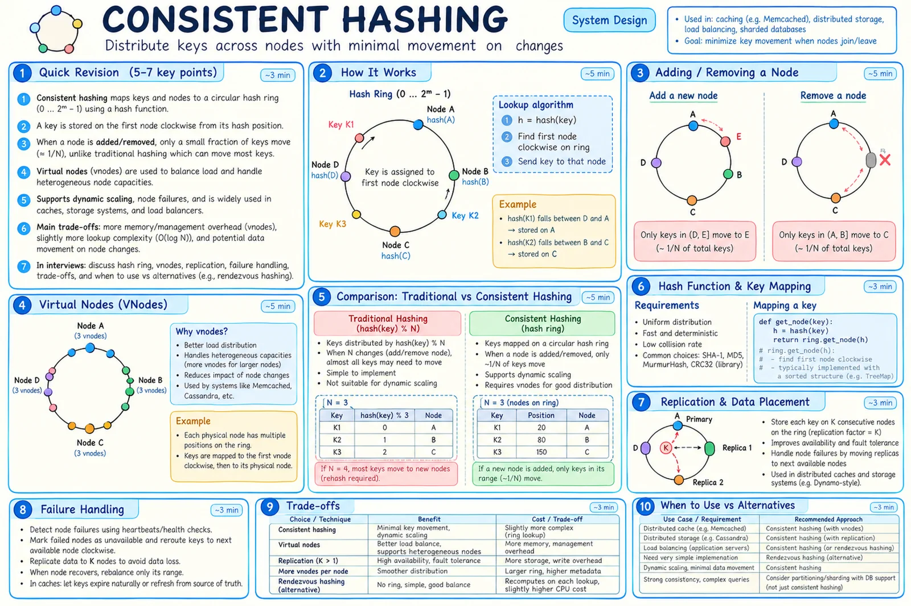
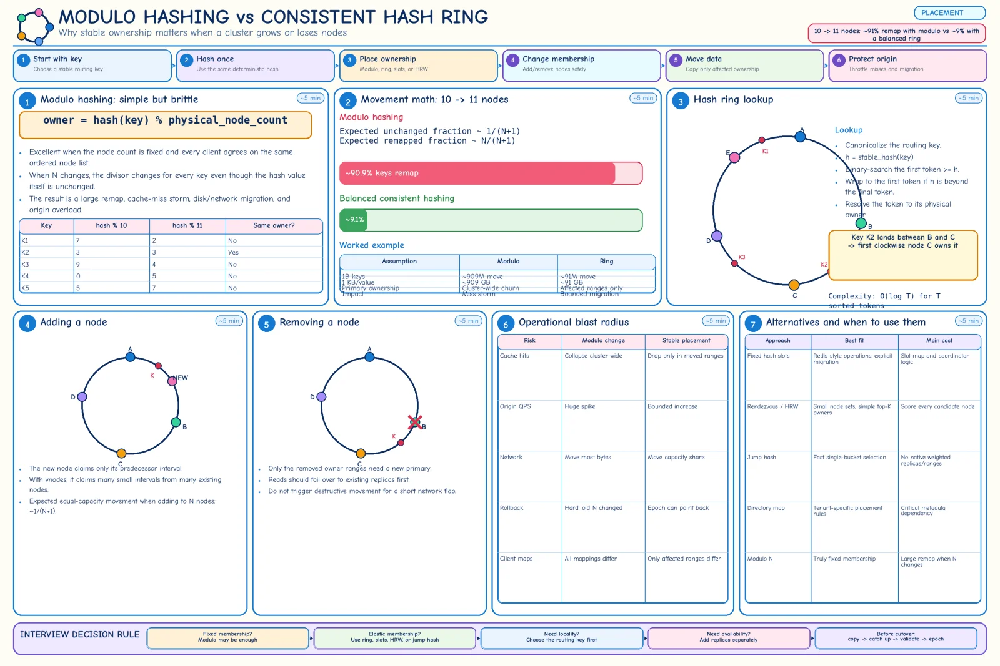

Topic · Consistent Hashing in Depth
Hash Ring Fundamentals
Consistent hashing is a placement algorithm: which node owns a key, with minimal movement when membership changes. Not replication, not migration, not hot-key relief.


Quick Revision
- Use it when membership changes and stable ownership matters; a fixed cluster can use
hash % N. - Keys and tokens share one hash space; key → first token clockwise; lookup
O(log T). - Adding 1 node to N moves ~
1/(N+1)of keys vs ~N/(N+1)with modulo. - Vnodes fix structural imbalance; replication is separate; hot keys need their own fix.
- Production needs a control plane: stable hashing, canonical keys, versioned membership, controlled transfer.
The problem with modulo


owner = nodes[hash(key) % N] -- membership is part of the function P(remapped, N → N+1) ≈ N/(N+1) -- 10 → 11 nodes ≈ 90.9% 1B keys × 1 KB, 10 → 11 nodes modulo: ~909M keys / ~909 GB move ring: ~91M keys / ~91 GB move (~10× less)
- Big remap hurts - cache miss storms, huge data moves, sessions lose locality, broker partitions churn, CDN hit ratio collapses.
- Gives - deterministic placement, incremental scaling, bounded disruption, decentralized lookup.
- Doesn't give - replication, consistency, data transfer, range locality, traffic balance, multi-key locality.
- Modulo is fine when - membership is fixed, data is cheap to rebuild, or the divisor is a stable logical bucket count with a bucket → node map.
Ring and lookup
hash space 0 .. 2^64-1, ends joined token N owns (predecessor, N] h = hash(canonical_key) i = lower_bound(sorted_tokens, h); if i == T: i = 0 -- wraparound owner = token_to_node[sorted_tokens[i]] lookup O(log T), metadata O(T)
- Hash contract - UTF-8, Unicode normalization, byte order, signedness, delimiters, nulls, tenant/namespace/version, algorithm + seed, unsigned comparison. Ship cross-language test vectors.
- Hash choice - fast non-crypto (Murmur, xxHash), stable or explicitly versioned; keyed hash for untrusted input.
- Never swap hashes in place - nearly every key moves; version and migrate.
Alternatives and real systems
- Fixed slots -
slot = CRC16(key) mod 16384,owner = slot_map[slot](Redis Cluster). Explicit migration units; hash tags co-locate keys. - Rendezvous (HRW) - score every
(key, node), pick highest; natural replica ranking; naive O(N). - Jump hash - tiny state, fast, ~
1/(N+1)movement; harder weights, ranges, topology. - Directory - explicit placement for big tenants/compliance; critical metadata service.
- Range partitioning - keeps order; monotonic hotspots, split/merge.
- Bounded loads - skip overloaded owners; caps max load at some affinity cost.
- Real - Cassandra: token ring + vnodes + topology-aware replication. Redis Cluster: slots, not a ring; MOVED/ASK redirects.
- Don't use when - fixed nodes, managed placement, range-heavy access, stateless load balancing, tiny cluster, or you can't operate membership and migration.
// Java sketch with vnodes
NavigableMap<Long, String> ring = new TreeMap<>();
addNode(id): for i in 0..vnodes-1: ring.put(stableHash(id + "#" + i), id) // detect collisions
owner(key): e = ring.ceilingEntry(stableHash(key));
return e != null ? e.getValue() : ring.firstEntry().getValue();
Trade-offs
| Choice | Benefit | Cost / risk |
|---|---|---|
hash % physical_N | Extremely simple | Most keys remap on change |
| Classic ring | Minimal movement, decentralized lookup | Token metadata, probabilistic balance |
| Fixed slots | Explicit migration unit | Slot map; hot slots possible |
| Rendezvous | Simple; ranked replicas | Scores every node |
| Jump hash | Tiny metadata, fast | Weak weighting/topology support |
Failure modes
- Nearly every key remaps - modulo by node count → ring, slots, rendezvous, jump, directory.
- Clients disagree on owner - encoding/seed/signedness/order differ → canonical bytes + test vectors.
- Full remap after upgrade - hash changed silently → version + dual placement.
- Token collision overwrites owner - detect and regenerate.
- Lookup past the last token fails - wrap to the first.
- Signed vs unsigned order differs - define unsigned ordering.
- Range queries fan out - hashing destroys order → read model or range partitioning.
- Adversarial bucket attack - keyed hash, validation, rate limits.
Interview practice
Answer aloud, then reveal.
Freshworks Lead (2024) / Hyperface EM (2024): what is consistent hashing?
A stable key → node placement for dynamic clusters: keys and tokens on one ring, key goes to the next token clockwise, so node changes move only nearby ranges. Vnodes improve balance.
Cohesity MTS-3 (May 2025): consistent hashing deep dive inside a URL-shortener HLD.
Modulo remaps most keys; ring moves only adjacent ranges. Add vnodes, weights, topology-aware replicas, copy/catch-up/validate/epoch migration. It doesn't solve hot keys.
Why does modulo move almost everything?
Changing N changes the divisor for every key; only ~1/(N+1) keep the same index.
Why ~1/(N+1) movement on a balanced ring?
With N+1 equal shares, the new node takes about one share from existing owners.
Ring vs Redis slots vs rendezvous vs jump?
Ring: sorted tokens, O(log T). Slots: stable slot then slot → node, easy migration. Rendezvous: highest score, ranked replicas, O(N). Jump: compact single-bucket choice, less flexible.
Can it support range queries?
Not naturally; hashing destroys order. Use secondary/search indexes or range partitioning.
How do you change the hash function?
Version it; compute both placements, copy, dual-read/redirect, validate, publish a new epoch, keep rollback.
What should you say in a product design interview?
"The managed cache/DB handles placement via a ring or slots; I'll pick the key for locality, plan for hot keys, and rely on versioned membership." Go deeper only for infrastructure prompts.